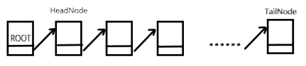
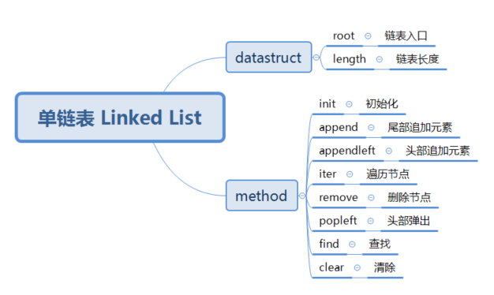

3. 链表¶
链表属于链式结构，与线性结构不同，它在内存中的空间可以是不连续的，而是由指针的方式进行连续访问。 链表不能通过下标访问到具体元素，查找某个链表中的元素（需要遍历查找），时间复杂度较线性结构的查找操作会高一些
单链表¶
由图可知，单链表首选需要一个根节点(root 节点)指向首节点，即 head 节点，然后每一个节点再指向下一个节点，一直到最后一个节点 tail 节点位置。 单链表中每一个节点包含两个量，一个是元素本身的值 value，一个是指向下一个元素位置的指针 next。
实现单链表¶
首先根据固定的格式分析实现该抽象数据结构需要用到哪些基本属性和方法，如下图：
上图是实现一个单链表具备的条件，下面是代码实现:
class Node(): # Node节点，用来表示每一个元素
def __init__(self, value=None, next=None):
self.value = value
self.next = next
class LinkedList():
def __init__(self, maxsize=None):
self.maxsize = maxsize
self.root = Node() # Node实例化一个节点为根节点
self.length = 0 # 链表中元素的个数（不包含根节点）
self.tailnode = None # 尾节点
def __len__(self):
return self.length
def append(self, value):
if self.maxsize is not None and len(self) >= self.maxsize: # 判断元素个数是否大于给定的最大值maxsize
raise Exception('LinkList is full!')
node = Node(value)
tailnode = self.tailnode
if tailnode is None: # 说明此时链表只有root节点
self.root.next = node
else:
tailnode.next = node
self.tailnode = node # 更新尾节点
self.length += 1 # 长度加1
def appendleft(self, value): # 插入到root节点的后面
headnode = self.root.next # 拿到appendleft之前的头结点
node = Node(value) # 创建新节点
self.root.next = node #插入到root节点之后
node.next = headnode # 把插入前的头结点，放到插入元素的后面
self.length += 1 # 长度加1
def iter_node(self):
head = self.root.next # 获取到根节点后第一个节点
while head is not tailnode: # 如果这个节点不是尾节点就一直循环
yield head
head = head.next # 更新节点
yield head # 最后再yield出最后一个节点
def __iter__(self):
for node in self.iter_node(): # iter_node()方法是为此方法服务的
yield node.value #遍历出每个节点的value
def remove(self, value): # 删除一个节点
pre = self.root # 定义前一个节点
cur = self.root.next # 定义当前节点
while cur.next is not None: # 说明链表中不只是含有根节点
if cur.value == value:
pre.next = cur.next
del cur
self.length -= 1
return
def find(self, value): # 返回查找的元素在链表中的位置
index = 0
for node in self.iter_node():
if node.value == value:
reutrn index
index += 1
return -1 # 没有找到返回-1
def popleft(self): # 删除头部节点
head = self.root.next
if head is None: # 判断是否有节点元素在
raise Exception('Link List is empty!')
self.root.next = head.next # 把root指向头结点的下一个节点
value = head.value # 获取到value
del head #删除节点
self.length -= 1 # 别忘记长度减1
return value # 返回
def clear(self):
for i in self.iter_node():
del i
self.root.next = None
self.length = 0
# 测试ADT
linklist_1 = LinkedList()
linklist_1.append(9)
linklist_1.append(8)
linklist_1.append(7)
assert len(linklist_1) == 3
assert linklist_1.find(8) == 1
assert linklist_1.find(1) == -1
linklist_1.remove(7)
assert len(linklist_1) == 2
assert linklist_1.find(7) == -1
assert linklist_1.popleft() == 9
assert linklist_1.find(9) == -1
linklist_1.appendleft(9)
assert linklist_1.find(9) == 0
linklist_1.clear()
assert len(linklist_1) == 0
上述就是实现一个单链表的ADT实现。
单链表中 append() 、appendleft()、popleft() 等操作的时间复杂度都是O(1)，
但是 find()、remove() 等都是O(n)的时间复杂度。